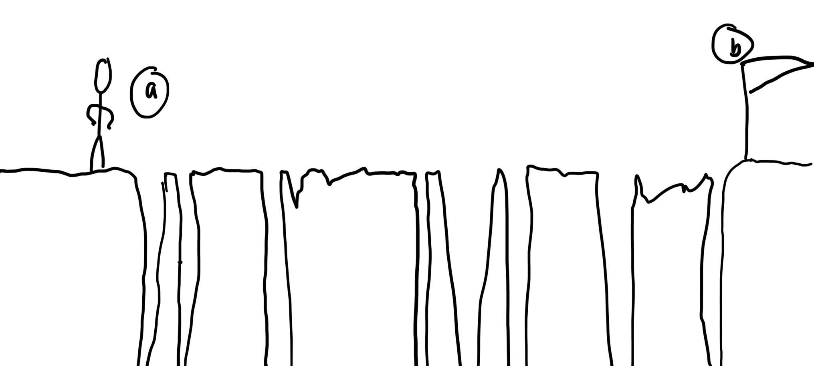
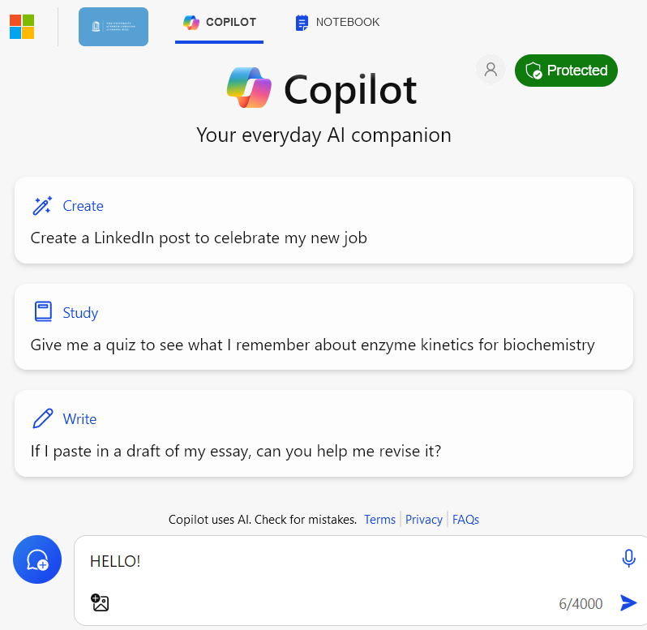

tryCatch(invisible(
capture.output(
o <- optimx(
c(thetaX[i], psiX[j], muX[m], mu3X[l], pX[k]),
log_L00, control = list(maximize = TRUE),
upper = c(Inf, Inf, Inf, Inf, 1),
lower = c(-Inf, -Inf, -Inf, -Inf, 0), method = "L-BFGS-B"))))
vm00X <- cbind(vm00X, unlist(o[1:5]))
L00X <- c(L00X, unlist(o[6]))Using Generative AI
Jeanny Wang’s narrative experience in seeking gAI assistance in statistical programming
Eponymous
2024-04-15
Generative AI Disclosure
https://provost.unc.edu/student-generative-ai-usage-guidance/
I attest that this presentation made use of AI in the following ways:
| Usage | Tool Used | How you edited the output, if at all | Conversation |
|---|---|---|---|
| Topic selection | NA | gAI not used | |
| Brainstorming and idea generation | NA | gAI not used | |
| Research | NA | gAI not used | |
| Source valuation | NA | gAI not used | |
| Outlining/planning | NA | gAI not used | |
| Drafting (markdown) | Github Copilot | All code using copilot was tested, edited, reviewed/revised iteratively, and evaluated against documentation and for the respective programming language | See appendix documentation for chatlog |
| Media creation | NA | gAI not used | |
| Revising (code and completions) | Github Copilot | All code using copilot was tested, edited, reviewed/revised iteratively, and evaluated against documentation and for the respective programming language | See appendix documentation for chatlog |
| Polishing (code and completions) | Github Copilot | All code using copilot was tested, edited, reviewed/revised iteratively, and evaluated against documentation and for the respective programming language | See appendix documentation for chatlog |
| Other: Programming with R, SAS, html, css | Github Copilot | All code using copilot was tested, edited, reviewed/revised iteratively, and evaluated against documentation and for the respective programming language | See appendix documentation for chatlog |
Roadmap
- Overview of UNC policies and resources
- Use guidelines
- Accessing institutional copilot
- Use cases in statistical programming
- slides at https://jeannyww.github.io/presentations
Generative AI at UNC
- UNC has a Generative AI Committee
- UNC has Generative AI Resources
- UNC has modules on AI literacy
Imperative rules of usage at UNC
- Data that are confidential or personal should not be entered into generative AI tools.
- Document your use of generative AI tools in your work. https://tarheelwritingguide.unc.edu/ai-tools/
- Unless provided other guidelines for an assignment, exam, or course, follow the guidelines at https://provost.unc.edu/student-generative-ai-usage-guidance/.
Responsible usage
- Multiple sustainability tradeoffs to consider when adopting AI systems1
- Deployment issues, ethics and society, privacy & security, job displacement, environment
- Environmental costs (energy, raw materials, and water consumption)2
Responsible usage
- Know thyself

Using genAI output to bridge large knowledge gaps
It is harder to fact check for hallucinations and bias if you try to use gAI to bridge large knowledge gaps

Using genAI output to bridge large knowledge gaps
Rather,
Ideally utilize genAI to bridge knowledge gaps that you are able to verify and check
Identify the small gaps and bridge

Using genAI to bridge knowledge gaps take two. At each gap bridged, you have your own scaffold to fact check the AI for biases and hallucinations
gAI at UNC
- UNC recently expanded institutional access to copilot in February. Read more
Copilot at UNC- expanded access to all existing faculty and staff
Accessing institutional copilot
- If you are on your desktop, open a new tab in your web browser (Edge or Chrome are recommended)
- Go to: https://copilot.microsoft.com/
(3) Sign in with your UNC account
(4) You’re in!
https://copilot.microsoft.com/
You’ll see a “protected” badge next to your user profile picture (meaning you are using enterprise version with data protection)
Uses in statistical programming
Use Cases
- Explain code (both for code you are learning and for adding documentation to source code you have written)
- Find and fix bugs in source code
- Generate unit tests for your source code
- Convert natural language to: Perl regular expressions, SQL queries, code snippets, etc.
- Hallucinate incorrect code 👻
These use cases are operationalized through prompting and iteration
- Prompting: the process of querying AI chatbots for information.
- Prompting benefits from direct instruction that provides useful context.
- Iteration: the process of prompting, evaluating, and re-prompting.
“Three-Step Approach”:
From Dr Todd Cherner, the art and science of prompting AI
- Select the AI tool you will use
- Role: State the role that the AI will take and who the AI is giving the information to.
- Input: Starts with a verb.
- The specific action you want the AI to complete.
- Output: ensure the content generated by the AI meets your needs.
- Length: ie, word count, number of paragraphs, or another metric to clarify expectations.
- Audience: State who the receivers of the information will be (also can be your role)
- Style/Tone: Explain if you want the response to be informative, persuasive, or entertaining.
- Format: Structure of the response (essay, procedures, outline, email, blog, etc.)
…What do I do if the code that was generated doesn’t work?
- Define “didn’t work”
- You have some output, and it is not what you expected
- You have incomplete/no output
- You have error and/or warning messages
- Backtrack
- It might be hallucinations. Manually reference the documentation specific to the programming language.
- It might be your prompt. Revise your prompt by breaking down the problem space into ‘bridge-able’ knowledge gaps.
- It might be both. Reference the documentation and iteratively re-prompt.
- Split your prompt, give examples, be specific, and use ‘reflexion’.
Let’s try together
Use your genAI tool of choice (OpenAI, Claude, Copilot, etc.). Or, use institutional Copilot if you have access through your UNC account https://copilot.microsoft.com/
Prompting: Explain code
Explain code (author: PickleBoxer@Github)
You are a world-class biostatistician and R programmer. I don't know how to code, but I want to understand how this works. Explain the following code to me in a way that a non-technical person can understand. Always use Markdown with nice formatting to make it easier to follow. Organize it by sections with headers. Include references to the code as markdown code blocks in each section. The code: (From: Derkand@Github)
Prompting: Document code
Document code (adapted from author: PickleBoxer@Github)
Please add comprehensive documentation for [the code below], including clear and concise explanations of its purpose, design, and implementation. Consider including examples of how to use the function get_pvalTRUENC, as well as any relevant diagrams or flow charts to help illustrate its workings. Ensure that the documentation is easily accessible to other users. Use documentation tools such as inline comments, markdown files, or a documentation generator to simplify the process. The code:
This provided prompt and code is for demonstration purposes only and will take the AI a time to develop a response (~2-3 minutes). Depending on the AI you use, you will run into a token limit. Run at your own risk (Author: Derkand@Github)
#
# Get p-value
#
library(MASS)
get_pvalTRUENC = function(p,X,J,Jm,Jv,theta,psi,SigmaList,tSigma,tSigma2,tSigma3,dSigma,Adjmu,Adjmu2,Adjmu3,Adjmu4,mu,mu3,perm){
X<<-X
J<<-J
Jm<<-Jm
Jv<<-Jv
SigmaList<<-SigmaList
tSigma<<-tSigma
tSigma2<<-tSigma2
tSigma3<<-tSigma3
dSigma<<-dSigma
Adjmu<<-Adjmu
Adjmu2<<-Adjmu2
Adjmu3<<-Adjmu3
Adjmu4<<-Adjmu4
mu<<-mu
mu3<<-mu3
logH0 = log_L(rep(0,length(X)),X,Jm,Jv,theta,psi,tSigma,tSigma2,tSigma3,dSigma,Adjmu,Adjmu2,Adjmu3,Adjmu4,mu,mu3)
#cat(m00,p,'\n')
aaaa = rep(p,length(X))
ll = log_L(aaaa*0,X,Jm,Jv,theta,psi,tSigma,tSigma2,tSigma3,dSigma,Adjmu,Adjmu2,Adjmu3,Adjmu4,mu,mu3)
res2 <- try(B <- find_GlobalOS(theta,psi,mu,mu3,p,ll))
Bxx = B
logHa = B$logL
pp =getP(unlist(B$a))
T = unlist(logHa) - unlist(logH0)
if (T <= 0){
perm=2
}
ST = NULL
L = length(X)
P=p
for (i in 1:perm){
if (i %% 2 == 1){cat('Permutation',i,'\n')}
X = NULL
mu0 = NULL
mu03 = NULL
deltaV = NULL
for (j in 1:L){
Sigma = SigmaList[[j]]
D = diag(Sigma)
deltaV = c(deltaV,D)
tt = rep(0,length(D))
v = (Sigma+ diag(tt))
s = rmvn(1,rep(0,length(D)),v)
mu0 = c(mu0,mean(s))
mu03 = c(mu03,mean((s-mean(s))^3))
invS = solve(Sigma)
s = sum((s)%*%invS%*%invS%*%t(s))
X = c(X,s)
}
X<<-X
mu<<-mean(mu0)
mu3<<-mean(mu03)
theta = max((sum(X - Jm - Adjmu*mu^2))/sum(tSigma),1/sum(tSigma))
psi = theta
#cat(theta,psi,'\n')
#cat(X,'\n')
theta = log(theta)
psi = theta
aaaa = rep(P,length(X))
ll = log_L(aaaa*0,X,Jm,Jv,theta,psi,tSigma,tSigma2,tSigma3,dSigma,Adjmu,Adjmu2,Adjmu3,Adjmu4,mu,mu3)
res2 <- try(B <- find_GlobalOS(theta,psi,mu,mu3,p,ll))
if(inherits(res2, "try-error") ){
cat('','\n')
cat('Error',i,'\n')
cat('','\n')
}else{
logH0 = log_L(rep(0,length(X)),X,Jm,Jv,theta,psi,tSigma,tSigma2,tSigma3,dSigma,Adjmu,Adjmu2,Adjmu3,Adjmu4,mu,mu3)
logHa = B$logL
D = unlist(logHa) - unlist(logH0)
ST = c(ST,unlist(D))
if (i==500){
pval = mean(T<=ST)
if (pval>0.1){break}
}
if (i==50){
pval = mean(T<=ST)
if (pval>0.25){break}
}
if (i==100){
pval = mean(T<=ST)
if (pval>0.15){break}
}
}
}
cat(sum(ST>100),'\n')
if (T<0){T==0}
ST[ST<0] = 0
#cat(ST,'\n')
p = sum(ST>=T)/length(ST)
return (list(p=c(p,T),prob = pp,est = Bxx))
}Prompting: Debugging errors
I am a beginner learning SAS 9.4. I ran this code in SAS 9.4
I got this error
ERROR: Array subscript out of range at line 12 column 7.
RULE:----+----1----+----2----+----3----+----4----+----5----+----
10 . 3
x1=. x2=. x3=. I=. measure=3 _ERROR_=1 _N_=2
NOTE: The SAS System stopped processing this step because of
errors.
WARNING: The data set WORK.TEST might be incomplete. When this
step was stopped there were 1 observations and 5
variables.You are a world class SAS programmer. Explain to me what this error means. How do I fix the error? Provide me the fixed code with each of the corrections explained line by line.
Prompting: Convert natural language to code
- Example for defining a Perl regular expression
Define for me 5 different candidate perl regular expressions to search for the following diagnosis code pattern for squamous cell carcinoma: C44*2** Where the '*' is a placeholder for any number from 0 to 9.
- Example for SQL query
I have a dataset that had multiple rows of clinic visits per unique ID. Each row has a distinct date, diagnosis code, and an indicator for the outcome of interest. Write for me three candidate SQL queries using the SAS 9.4 PROC SQL procedure which tabulates the the total number of IDs who have the outcome in at least two clinic visits.
Conclusion
- Use responsibly. Consider sustainability tradeoffs.
- Utilize institution-specific guidance and resources.
- For UNC: https://cail.unc.edu/resources/
Resources
- Institution-specific guidance: https://provost.unc.edu/generative-ai-employee-resources/
- UNC AI literacy modules:
- Learn about a plethora of models and benchmarks: https://huggingface.co/open-llm-leaderboard
- Kumar et. al, 2024. Balancing Progress and Responsibility: A Synthesis of Sustainability Trade-Offs of AI-Based Systems
Acknowledgments
- This effort would not be possible without the following:
- undocumented R code from Dr. Derkach (Thank you Andriy you’re the best!)
- Advisors Dr. Butler and Dr. Lund
- Support from the UNC Center for Pharmacoepidemiology
- Feedback, support, and collaboration of Bria Carmichael, Catie Wiener, Amarnath Marthi, Clement Acheampong, and Dr.Jonsson-Funk
- Inspiration and feedback from Dr. Crystal Owens and Anvesh Rao
- Resources and guidance placed forth by the UNC Generative AI Committee
Thank you
- Discussion
- Questions?
- Comment?
- Feedback?
Copilot chatlog
For formatting, html, markdown, and YAML syntax help:
-- How do I limit the number of lines in code chunks in the YAML settings of a quarto markdown document?
-- In Quarto, you can limit the number of lines in code chunks by using the `eval.max.lines` option in the YAML settings. This option sets the maximum number of lines of output to display for each code chunk. Here's an example:
---
title: "Your Document Title"
output:
html_document:
eval.max.lines: 50
---
In this example, the maximum number of lines of output for each code chunk is set to 50. If a code chunk produces more than 50 lines of output, only the first 50 lines will be displayed.
-- Write me a template html table with 5 columns and 6 rows.
-- Sure, here's a basic HTML table with 5 columns and 6 rows:
<table>
<tr>
<th>Header 1</th>
<th>Header 2</th>
<th>Header 3</th>
<th>Header 4</th>
<th>Header 5</th>
</tr>
<tr>
<td>Data 1</td>
<td>Data 2</td>
<td>Data 3</td>
<td>Data 4</td>
<td>Data 5</td>
</tr>
<tr>
<td>Data 6</td>
<td>Data 7</td>
<td>Data 8</td>
<td>Data 9</td>
<td>Data 10</td>
</tr>
<tr>
<td>Data 11</td>
<td>Data 12</td>
<td>Data 13</td>
<td>Data 14</td>
<td>Data 15</td>
</tr>
<tr>
<td>Data 16</td>
<td>Data 17</td>
<td>Data 18</td>
<td>Data 19</td>
<td>Data 20</td>
</tr>
<tr>
<td>Data 21</td>
<td>Data 22</td>
<td>Data 23</td>
<td>Data 24</td>
<td>Data 25</td>
</tr>
</table>
You can replace "Header" and "Data" with your actual data
-- explain this error to me: can not read a block mapping entry; a multiline key may not be an implicit key at line 9, column 26:
code-line-numbers: false
^
Stack trace:
can not read a block mapping entry; a multiline key may not be an implicit key at line 9, column 26:
code-line-numbers: false
-- This error is related to the YAML syntax in your Quarto document. YAML is very sensitive to correct indentation and formatting. The error message "can not read a block mapping entry; a multiline key may not be an implicit key" typically means that there's a problem with the way your YAML is structured.
The error message points to line 9, column 26. However, based on the excerpt you provided, it's not clear what's on that line because the provided excerpt only goes up to line 10.
The issue might be related to incorrect indentation or a missing colon (:) in your YAML. Each new key-value pair should be on a new line with the same indentation, and there should be a space after the colon.
Here's an example of correct YAML formatting:
title: "Your Document Title"
output:
html_document:
code-line-numbers: false
Please check your YAML for these potential issues. If the problem persists, please provide the full YAML for further assistance.